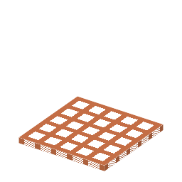

①子ども 熱した銅の網の上で、メタノールを空気と反応させる。網そのものは減らない。
②学生 銅インゴット4つで作る。火のついたたき火の上に置き、メタノールを持って右クリックするとホルマリンができる。冷たい網（火の上でない）では反応しない。網は何度でも使える（触媒）。
③大人 熱い銅の表面に、メタノールと酸素がくっついて反応し、ホルムアルデヒドと水になって離れていく：2CH3OH + O2 → 2HCHO + 2H2O。銅は反応を速めるだけで、自分は変わらない。これが触媒。
④ガチ 1867年ホフマンが、熱した白金のらせんでメタノールを酸化してホルムアルデヒドを確かめた。工場ではのちに銀の網（約600℃）が主になった。
（このアイテムを使うレシピは無い）